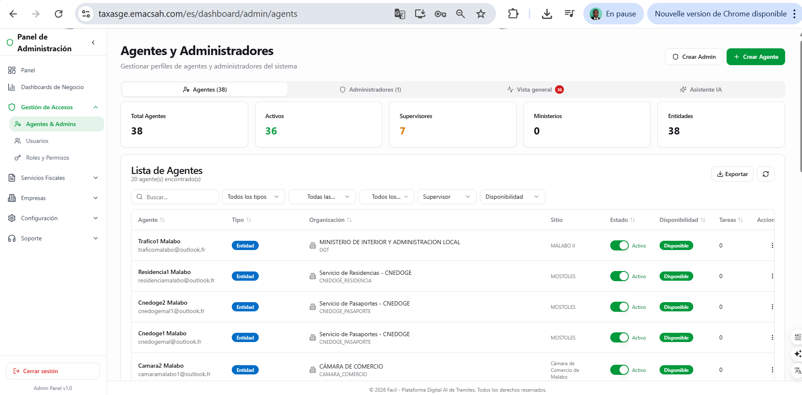
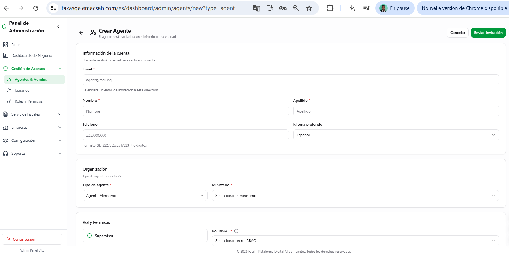
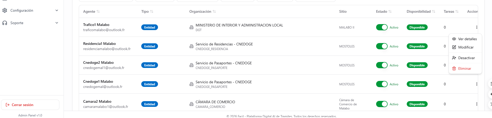
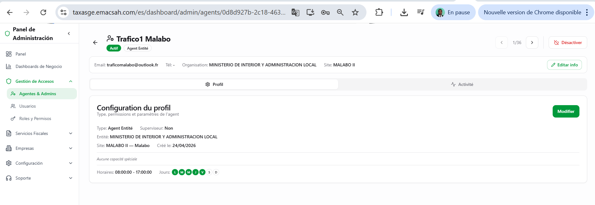
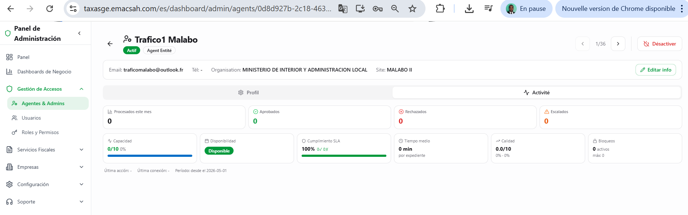
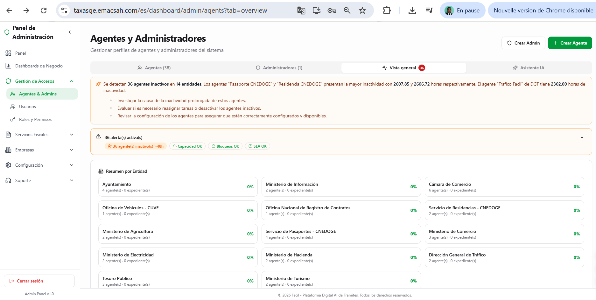
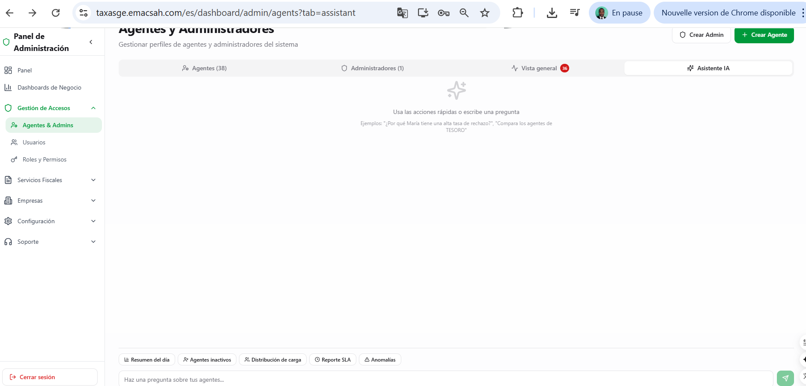
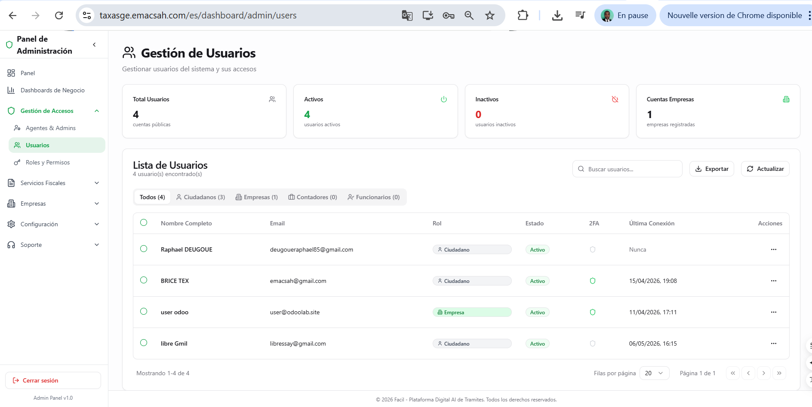
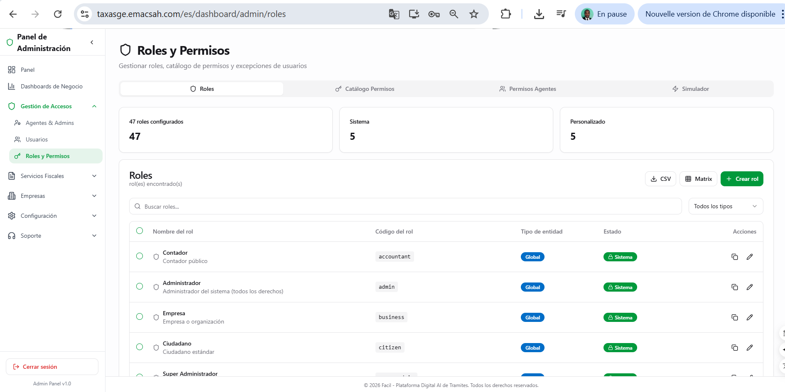
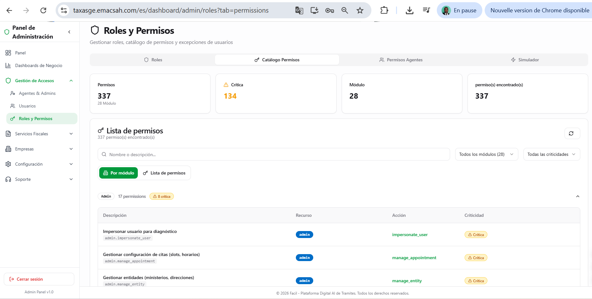

Admin Usuarios + RBAC : roles y permisos granulares
El RBAC (Role-Based Access Control) de Facil dispone de 50+ permisos granulares organizados en familias (usuarios, servicios, pagos, comunicaciones, audit, etc.). El admin puede crear roles personalizados combinando permisos según las necesidades específicas de una entidad. Las acciones cubren : crear/modificar/suspender usuarios, atribuir roles (estándar o personalizados), reset MFA, ver el historial de conexiones por usuario.
1. Las 10 pantallas de gestión RBAC
El módulo RBAC se compone de 10 vistas complementarias que cubren todo el ciclo de vida de los usuarios y de los roles.










2. Roles estándar del sistema
Facil viene con varios roles preconfigurados que cubren la mayoría de los casos. Los roles personalizados se crean solo para necesidades excepcionales.
| Rol estándar | Permisos clave | Modificable |
|---|---|---|
citizen | Crear solicitudes propias, pagar, ver mis documentos, recibos | No (sistema) |
business | Idéntico citizen + gestión empresas + bundle payment + batch requests | No (sistema) |
accountant | Acceso multi-clientes, vista consolidada, sin autorizar pagos | No (sistema) |
agent_* (7 variantes) | Validación de solicitudes según entidad (CNEDOGE, DGT, etc.) | Parcial (permisos granulares) |
supervisor_* (7 variantes) | Encadrar agentes + tratar escalaciones + KPIs entidad | Parcial |
admin | Configuración global plataforma + RBAC | No (sistema) |
admin_tecnico | Config sistema + workflows + providers (sin RBAC ni audit) | No (sistema) |
3. Familias de permisos (50+ permisos)
Los permisos están agrupados en 8 familias para facilitar la asignación :
- users.* — view, create, update, suspend, delete, view_own, view_team (7 permisos)
- roles.* — view, create, update, delete, assign, view_audit (6 permisos)
- service_requests.* — view_own, view_team, view_all, lock, approve, reject, escalate, request_documents, assign (9 permisos)
- payments.* — view, validate, reconcile, refund, escalate (5 permisos)
- companies.* — view, create, verify, suspend, merge_duplicates (5 permisos)
- config.* — view, update_communications, update_workflow, update_system, update_translations (5 permisos)
- audit.* — view_own, view_team, view_all, export (4 permisos)
- special.* — verify_treasury, verify_biometric, ai_agent, field_collection (9 permisos)
4. Acciones administrativas críticas
Reset MFA
El admin puede resetear el 2FA de un usuario que ha perdido su dispositivo. Esta acción está logueada de forma especial : la próxima conexión del usuario forzará la reconfiguración del 2FA, con un email + SMS de notificación al usuario para confirmar que el reset es legítimo. Si el usuario no reconoce el reset, debe contactar inmediatamente el soporte.
Suspensión de cuenta
Una cuenta suspendida no puede acceder a Facil pero sus datos quedan preservados. La suspensión se hace con motivo obligatorio (sospecha de fraude, decisión jerárquica, demanda judicial). El usuario es notificado por email. La reactivación requiere una acción admin explícita.